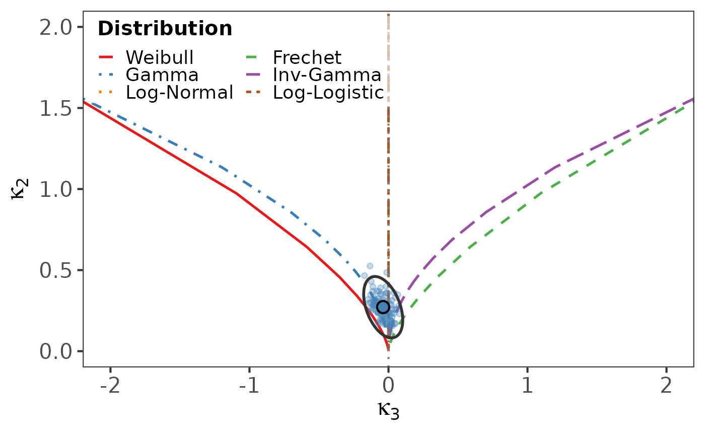

Convenience wrapper around log_cumulant_diagram providing the
compact plot_lc(data = x, B = 100) interface requested for quick
diagnostics. plot.lc is kept as an alias for backward compatibility.
Arguments
- data
Numeric vector of positive observations.
- B
Integer; bootstrap replicates.
- data_name
Character; label used in the title.
- seed
Integer random seed.
- ...
Further arguments passed to
log_cumulant_diagram.
Examples
data(reliability_datasets)
plot_lc(reliability_datasets$BallBearing, B = 100)
